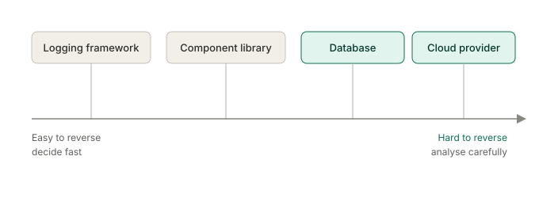
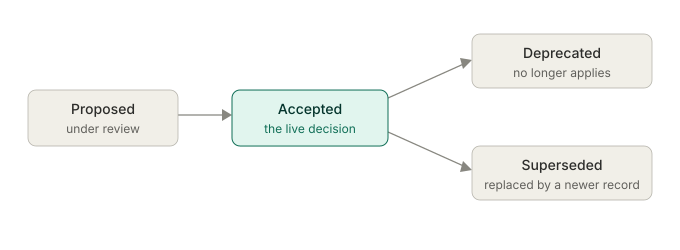

How architecture decisions actually get made
Once you understand the problem, the people around it and the requirements that matter, you can start making architecture decisions. A sound decision connects that evidence to credible options, explains the trade-offs and makes clear who has authority to decide. Principles and decision records support that work, but neither can replace it.
You'll come away with:
- A practical way to move from requirements and constraints to a defensible decision.
- A clear distinction between principles, standards, preferences and decisions.
- A proportionate approach to decision authority, evidence, challenge and governance.
- A simple way to record important decisions and revisit them when the context changes.
Start by stating the decision
Architecture discussions often start with a particular technology or product already in mind: "Should we use serverless?", "Which database should we choose?" or "Can we buy this product?" These may be valid questions, but asking them too early can narrow the options before the team has agreed what the solution needs to achieve.
For example, instead of starting with "Should we use serverless?", frame the decision around the service need:
How should the service process an unpredictable submission workload while meeting its recovery, security, support and cost requirements?
This keeps serverless as one possible option rather than assuming it is the answer. The team can then compare credible approaches using evidence about demand, recovery objectives, data sensitivity, support capability, whole-life cost and dependency on a platform or supplier.
A useful decision statement identifies:
- the outcome or problem the decision needs to address
- the scope and affected parts of the service
- the requirements, constraints and assumptions that matter
- the person or forum with authority to decide
- when the decision is needed and what happens if it is delayed
Use principles to guide the choice, not make it for you
An architecture principle is a general guide for making related decisions consistently. It expresses a preferred direction and explains why that direction matters. It is different from a legal duty, mandatory standard, project constraint or technology choice.
- Principle: prefer open standards where they meet the service need, to support interoperability and future change.
- Mandatory requirement: the service must meet a particular legal or departmental control within its stated scope.
- Constraint: the first release must exchange data through an existing interface that cannot change before the delivery date.
- Preference: the team would like to use a technology it already knows.
- Decision: use a particular interface standard for this integration, for the reasons recorded.
The distinction matters. A preference should not become a false "must", while a mandatory requirement cannot be traded away as though it were only a preference.
The Technology Code of Practice is a cross-government standard containing 13 points for designing, building and buying technology. It should inform relevant decisions, but it is not a complete set of architecture principles and its points do not automatically select an option. The current guidance says to consider each point, align with the mandatory points and follow as many of the others as practical. Applicability still needs to be established for the organisation, service and decision.
Departmental strategies, approved patterns, security policies, platform constraints and service-specific principles may also affect the choice. They do not form one universal hierarchy. Record the source, scope and authority of each one so the team knows whether it is mandatory, preferred or open to exception.
If a service needs its own principles, agree only those that address repeated decisions or important tensions. A useful principle has:
- a short statement of the preferred direction
- a rationale linked to the service or organisational context
- practical implications for design and delivery
- an owner and a route for agreeing an exception
- a reason to review or retire it
"Use serverless for intermittent workloads" is too close to a solution and ignores other requirements. "Match capacity and cost to evidenced demand" is more useful because it can guide a comparison of managed services, containers, serverless functions and other credible approaches.
Be clear about who makes the decision
A Solution Architect may make some decisions, recommend others, facilitate agreement or provide assurance. The role does not carry automatic authority over every technical, commercial, security, data or service decision.
Before doing detailed analysis, establish:
- Decision owner: the person or forum accountable for the choice.
- Contributors: the people with evidence, expertise or an affected dependency.
- Risk owners: the people authorised to accept relevant security, operational, financial or delivery risks.
- Assurance and approval: any independent challenge or formal permission required before proceeding.
The Service Manual governance principles say decisions should be evidence-based, focused on user needs and made at the right level, with teams clear about the boundaries of their authority. The Digital Assurance Playbook, in force from 1 April 2026, similarly places more accountability with delivery teams and organisations while retaining proportionate assurance and HM Treasury approval for decisions above an organisation's delegated authority or considered novel, contentious or repercussive.
Governance should improve the decision by bringing the right evidence and challenge. It should not be treated as a final presentation after the practical choice has already been made.
Move from evidence to a recommendation
The decision process continues the sequence used throughout this series:
- Frame the decision and outcome. State what needs to be decided, for whom and by when.
- Confirm requirements and constraints. Separate mandatory obligations from assumptions and preferences.
- Agree evaluation criteria. Derive them from user needs, service outcomes, quality requirements, risks and constraints before choosing an option.
- Develop credible options. Include approaches that could genuinely meet the need, described at a consistent level of detail.
- Gather evidence. Use research, service data, prototypes, technical investigation, costs, operational experience and specialist advice.
- Compare trade-offs. Explain what each option improves, weakens, costs, risks or makes harder to change.
- Recommend or decide. State the preferred option, why it is preferred, the uncertainty that remains and who owns the decision.
- Record and review. Preserve enough context to understand the choice and define what evidence would cause it to be reconsidered.
A decision matrix can help organise criteria and evidence, but its result is not automatically objective. Scores and weightings contain judgements, and small numerical differences can disguise uncertainty or weak evidence. Show the reasoning and sensitivity behind the numbers rather than treating the highest total as the answer.
For major government investment decisions, use the applicable business-case and appraisal guidance with finance and economic specialists. The 2026 Green Book warns against simple multi-criteria analysis based on weighting and scoring without an objective basis. It distinguishes that from properly facilitated multi-criteria decision analysis and requires appraisal to be proportionate to the proposal.
Match the effort to the consequences
Not every decision needs a workshop, options paper and governance board. The work should be proportionate to the decision's risk, cost, sensitivity, novelty, dependencies, reach and difficulty to reverse.

Reversibility is a useful prompt, not a complete classification. A library may be easy to replace in one service but embedded across hundreds of components in another. A database or cloud service may be easier to leave if the design, contract, data model and migration path support it. Ask what reversal would actually require rather than assigning a technology to a permanent category.
Spend more time where a choice:
- could cause material harm or service failure
- affects several teams, services or organisations
- creates a long-term commercial, data or supplier dependency
- has high whole-life cost or a difficult migration path
- rests on uncertain demand, policy, technology or delivery capability
- needs formal risk acceptance, assurance or approval
A low-risk and easily reversible choice may need a short discussion and a brief entry in a decision log. A cross-government dependency or long-term commercial commitment needs broader evidence and more formal challenge.
Record architecturally significant decisions
An Architecture Decision Record, or ADR, captures one architecturally significant decision and its rationale. A collection of ADRs forms a decision log. ADRs are a useful practice, not a universal government requirement, and the format should fit the team and the importance of the decision.
A decision is likely to be architecturally significant when it materially affects the structure of the solution, an important quality requirement, a published interface, a major dependency, cost or risk, or the ability to change the service later. Recording every routine implementation choice creates noise and makes important decisions harder to find.
At minimum, a useful record explains:
- Title and status: what the decision concerns and whether it is proposed, accepted or no longer current.
- Context: the problem, scope, relevant requirements, constraints, assumptions and evidence.
- Options: the credible alternatives considered and the criteria used to compare them.
- Decision and owner: what was decided, by whom and when.
- Consequences: the benefits, drawbacks, costs, risks and follow-on work.
- Review triggers: the change in evidence or context that would justify reconsidering the decision.
- Links: relevant requirements, principles, investigations, approvals and any record that it replaces.

There is no single mandatory set of ADR statuses. Choose a small lifecycle the team understands. When an accepted decision changes, preserve the history and create or link to the replacement rather than silently rewriting the old rationale. Apply the organisation's records-management, security and access requirements to where records are held and how long they are kept.
Store the record where the people who make, implement, assure and maintain the decision can find it. A source-code repository may suit software design decisions. Commercial, policy or cross-service decisions may need a wider repository. The tool matters less than clear ownership, accessibility and maintenance.
Revisit a decision when the evidence changes
A decision was made in a particular context. New evidence can make it reasonable to choose differently without making the earlier decision irrational.
Useful review triggers include:
- demand or performance moving outside the range used in the decision
- a change in policy, legislation, threat, classification or user need
- a supplier changing its price, service, contract or product direction
- an assumption failing during a prototype or live operation
- the team's support capability or organisational strategy changing
- an incident exposing a consequence that the original evidence did not reveal
A review date can be useful where change is expected, but a fixed date is not a substitute for a meaningful trigger. Review the decision when the evidence that supported it changes enough to affect the trade-off.
Questions to ask on a real project
- What exactly needs to be decided, and what outcome should it support?
- Which requirements and constraints materially distinguish the options?
- Which statements are mandatory, and who or what gives them that authority?
- What credible options have been considered at the same level of detail?
- What evidence supports the criteria, scores, costs and risk judgements?
- What does each option improve, and what does it make worse or harder to change?
- Who can recommend, decide, assure, approve and accept the remaining risks?
- Is the amount of analysis proportionate to the consequences and reversibility?
- What needs to be recorded so another person can understand the reasoning?
- What change in evidence would cause the decision to be revisited?
A defensible architecture decision makes the route from evidence to choice visible, including the trade-offs and uncertainty.
This is a practitioner guide to architecture decision-making in UK central government, not official guidance. Decision authority, assurance and records-management requirements vary by organisation, service, risk and type of decision.
Last reviewed September 2026 against the primary and authoritative sources below. Government policy and organisational processes change; check the source and your department's current assurance route before relying on them.